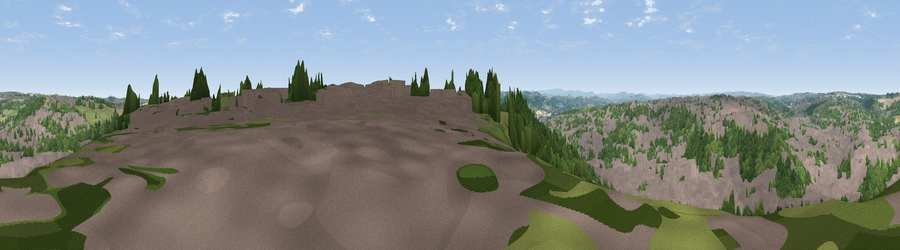

Viewpoint near Dewsbury
#23859 in England · top 39% of its area beats it · near DewsburyWhere it is
The exact computed spot (SE 25125 23025). Click the marker for map links.
The view, rendered

A 360° render of this exact spot computed from the terrain model, tree cover and land cover — summer colours, afternoon light, calibrated against photographs of famous viewpoints. Real trees, hedges and buildings will differ in detail.
The panorama
Grey silhouette: terrain skyline in each direction (720 bearings, Earth curvature and refraction included). Dashed green: skyline with trees (+15 m) and buildings (+8 m) as obstacles. Blue strip: how far the ground is visible on each bearing.
Where the view opens
Wedge length = distance to the farthest visible ground on that bearing (vegetation-aware). Rings at 10, 25 and 50 km.
What fills the view
50% built-up · 32% woodland · 16% grassland · 3% cropland
Angular shares of the visible panorama (visual magnitude), not map area. Landscape diversity 0.48 (0–1 Shannon).
Key numbers
More beautiful places nearby
The staircase of upgrades: each row has a higher view potential than everything closer. Driving times are estimates from straight-line distance, calibrated against real road routing — check an actual route before setting out.
| Place | Direction | Drive | Score |
|---|---|---|---|
| Viewpoint near Heckmondwike | W · 2 km | ~6 min | 53.8 |
| Viewpoint near Heckmondwike | W · 3 km | ~6 min | 57.6 |
| Viewpoint near Woodkirk | NNE · 3 km | ~7 min | 62.1 |
| Viewpoint near Upper Hopton | SW · 7 km | ~15 min | 65.7 |
| Viewpoint near Grange Moor | SSW · 7 km | ~15 min | 69.8 |
| Castle Hill | SW · 13 km | ~24 min | 70.2 |
| Viewpoint near Stump Cross | WNW · 17 km | ~30 min | 71.5 |
| Rawdon Billing | NNW · 17 km | ~30 min | 72.7 |
53.70306, -1.62089 · source: screening · position refined by local search. Computed location — check access rights before visiting.